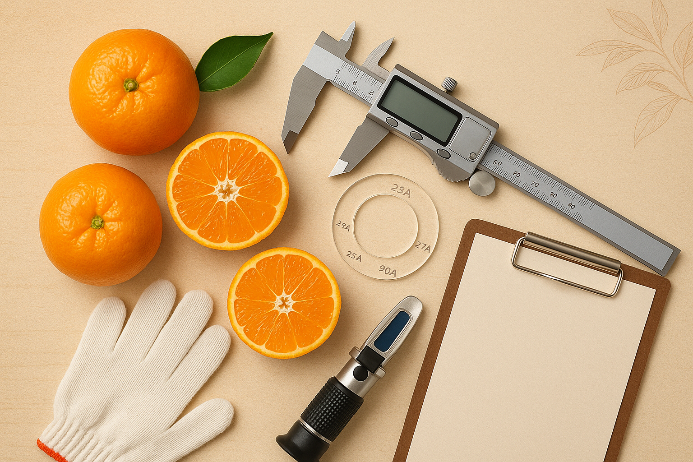

挑選重點
挑選優質茂谷柑有幾個關鍵要點，掌握這些技巧就能選到美味的茂谷柑！
看外觀
果皮應呈現深橘紅色，色澤均勻有光澤。表面光滑飽滿，沒有明顯凹陷或損傷。
摸質感
用手輕壓果實，應該結實有彈性。茂谷柑皮較厚，手感扎實表示品質好。
掂重量
同樣大小的茂谷柑，越重表示果肉越飽滿。茂谷柑本身就很有份量，拿起來沉甸甸的最佳。
檢查蒂頭
蒂頭應該是青綠色且完整，表示新鮮採摘。若蒂頭乾枯或脫落，代表存放過久。
挑選建議
建議選擇
- 果皮橘黃色澤均勻
- 果實飽滿有彈性
- 拿起來有重量感
- 蒂頭青綠完整
- 果形圓潤對稱
- 表面光滑無損傷
避免選擇
- 果皮過綠或過黃
- 表面有明顯凹陷
- 拿起來過輕過軟
- 蒂頭乾枯脫落
- 果形歪斜不規則
- 有腐爛或黑斑
保存方法
正確保存延長新鮮期
- 檢查果實： 收到茂谷柑後先檢查，若有損傷的果實請先食用，避免影響其他果實。
- 陰涼通風： 將茂谷柑放置在陰涼通風處，避免陽光直射。室溫約可保存2-3週。
- 冷藏保存： 若要延長保存期，可放入冰箱冷藏，但建議用保鮮袋裝好，避免水分流失。
- 適時食用： 茂谷柑最佳賞味期為採收後3週內，建議盡早食用以品嚐最佳風味。
食用建議
🍊 直接食用： 茂谷柑可以直接剝皮享用，果肉細緻無籽。建議食用前先放置室溫回溫，風味更佳。
🧊 冷藏後食用： 茂谷柑冷藏後食用，甜度更加集中，清涼爽口，別有一番風味。
🥤 榨汁飲用： 茂谷柑汁豐富且香甜，榨成果汁風味絕佳，是天然的甜味果汁。
🍰 料理應用： 茂谷柑皮可以製作果醬、蜜餞，果肉可加入沙拉或甜點中增添風味。